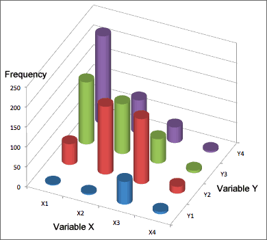
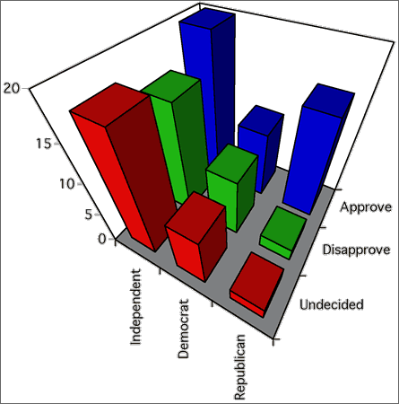

Graphical display in a bar chart
If we do not want to classify the variables in a contingency table as a response and explanatory variable, the data can be displayed with a 3-dimensional bar chart.

Three-dimensional bar charts are 'interesting' but there are more informative ways to display the data.
Chartjunk and perspective displays
Beware of adding chartjunk and perspective viewpoints to the display — they just make it harder to understand the data.
